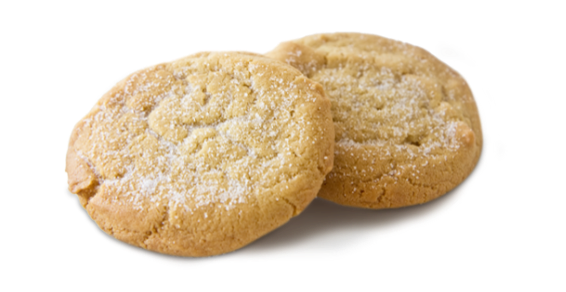

Directions
Sift together flour, baking powder, and salt. Set aside. Place butter and sugar in large bowl of electric stand mixer and beat until light in color. Add egg and milk and beat to combine. Put mixer on low speed, gradually add flour, and beat until mixture pulls away from the side of the bowl. Divide the dough in half, wrap in waxed paper, and refrigerate for 2 hours.
Preheat oven to 375°F.
Sprinkle surface where you will roll out dough with powdered sugar. Remove 1 wrapped pack of dough from refrigerator at a time, sprinkle rolling pin with powdered sugar, and roll out dough to 1/4-inch thick. Move the dough around and check underneath frequently to make sure it is not sticking. If dough has warmed during rolling, place cold cookie sheet on top for 10 minutes to chill. Cut into desired shape, place at least 1-inch apart on greased baking sheet, parchment, or silicone baking mat, and bake for 7 to 9 minutes or until cookies are just beginning to turn brown around the edges, rotating cookie sheet halfway through baking time. Let sit on baking sheet for 2 minutes after removal from oven and then move to complete cooling on wire rack. Serve as is or ice as desired. Store in airtight container for up to 1 week
Ingredients
3 cups all purpose flour
3/4 teaspoon baking powder
1/4 teaspoon salt
1 cup unsalted butter, softened
1 cup sugar
1 egg, beaten
1 tablespoon milk
powdered sugar, for rolling out dough
